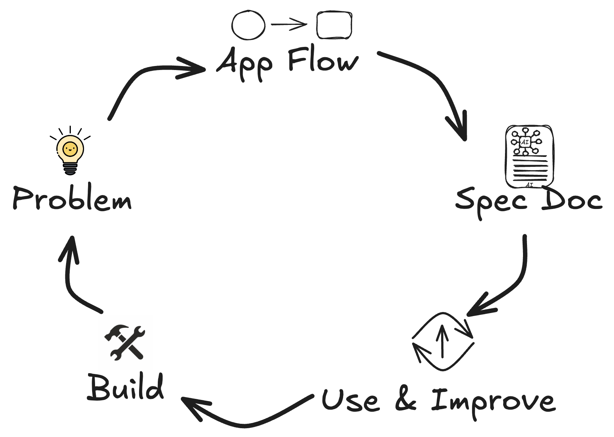

class: center, middle, title-slide # Building Simple Web Apps with AI Tools ### Lucas Soares, Instructor ### March 20, 2025 --- # Course Agenda 1. **Methodology Notes** -- 2. **What this Course is and What is Not** -- 3. **Motivation** -- 4. **AI Tools** -- 5. **Workflow for Building Apps** -- 6. **Hands-on: Cursor/Claude Walkthrough** -- 7. **Hands-on: Building A Simple Webpage** -- 8. **Notes on Best Practices** -- 9. **Hands-on: Building a Quiz App** -- 10. **Extending capabilities with APIs** -- 11. **Hands-on: Interactive Live Coding** --- # Methodology Notes 1. **Presentation**: Theoretical concepts and explanations -- 2. **Demonstration**: Live walkthrough of concepts -- 3. **Recap Summary**: Key takeaways and discussion -- 4. **Interactive Q&A**: Addressing specific questions -- 5. **Break**: Time to process and reflect --- # What This Course Is and Is Not ## <span style="color: red;">NOT About:</span> - Building commercial applications - Deploying apps for profit - Complex software architecture -- ## <span style="color: green">IS About:</span> - Learning how to be more productive with AI tools - LeveragingAI tools effectively to build apps for yourself - Using pure HTML/JavaScript for personal apps without hassle - Building tools for your own workflow needs - Understanding AI-assisted development --- # Course Overview This course will empower you to: - Build functional web applications using AI assistance -- - Create and refine technical specifications efficiently -- - Develop effective problem-solving approaches -- - Deploy personal applications that address local needs -- _The goal isn't to turn you into a professional developer, but to give you the tools and confidence to create solutions for problems that matter to you._ --- ## Target Audience - Technically curious non-developers - Low-code/no-code tool power users - Professionals looking to solve specific problems - Community builders with specific software needs -- If you've ever thought, <span class="highlight">"I wish there was an app for that,"</span> this course is for you. --- # Tools and Resources Needed To participate fully in this course, you'll need: - Computer with browser and internet connection - Free accounts for Cursor IDE and Claude - Optional: GitHub account -- All the tools we'll use have **free tiers** sufficient for our coursework. --- class: center, middle, section-title # Motivation --- # Why Learn to Build Apps with AI? - **AI tools lower the barrier to software creation** -- - Build **personal, local-first applications** that solve real problems -- - No professional development experience required -- - Gain **practical skills** for leveraging AI in software development -- - Move beyond reliance on big tech by creating **your own tools** --- # Who are Barefoot Developers? -- - Technically curious but not full-time programmers -- - Build software for personal & community use -- - Solve **specific problems** that commercial software ignores -- ## Why this mindset matters -- - Empowers individuals to take control of their digital tools -- - Encourages practical experimentation with AI -- - Bridges the gap between no-code and full software development --- class: center, middle, section-title # AI Tools --- # Core Components Overview Our development stack consists of five key elements: 1. **Large Language Models** (Claude, GPT) 2. **AI-enhanced IDEs** (Cursor) 3. **Frontend technologies** (HTML, CSS, JavaScript) 4. **Storage options** (local-first approach) 5. **Deployment methods** -- This combination of tools enables us to build complete applications with minimal technical background. --- class: center, middle <h1> <span style="background-color: lightgreen"> Hands-on: Claude Walkthrough </span> </h1> --- class: center, middle # Q&A & Break --- # Claude Recap - **Multi-Modal Chat**: General-purpose multi-modal communication - **Context**: 200k+ tokens of context length (~500 pages) - **Code Generation**: Writes code based on the context - **Code Review**: Helps refine code - **Claude Projects**: Work on multiple files at once for complex projects - **Claude Artifacts**: Run and preview code in the browser - **Prompting tips**: use role, give context, be clear, specific and direct - **Meta Prompt**: ask claude to improve your own prompt --- class: center, middle <h1> <span style="background-color: lightgreen"> Hands-on: Cursor Walkthrough </span> </h1> --- class: center, middle # Q&A & Break --- # Cursor IDE Recap - AI-enhanced code editor -- - Spec document capabilities -- - Cursorrules mechanism for consistent development -- - File referencing with @ symbol for context -- --- class: center, middle, section-title # Workflow for Building Apps --- # Basic Workflow Cycle  Our approach is **iterative and AI-collaborative**, focusing on continuous refinement based on user feedback. --- class: center, middle <h1> <span style="background-color: lightgreen"> Whiteboard Session </span> </h1> --- class: center, middle <h1> <span style="background-color: lightgreen"> Hands-on: Building a Simple Webpage </span> </h1> --- class: center, middle # Q&A & Break --- class: center, middle # Notes on Best Practices --- # Problem -- ## Brainstorm with Claude - Explore problem space - Generate initial ideas - Refine concepts through dialogue -- ## Research with AI Tools - <div style="display: flex; align-items: center; margin-bottom: 10px;"> <span>Perplexity</span> </div> - <div style="display: flex; align-items: center; margin-bottom: 10px;"> <span>ChatGPT</span> </div> - <div style="display: flex; align-items: center;"> <span>Gemini</span> </div> --- # App Flow -- ## Diagramming Tools - Use Claude for Diagrams (mermaid) -- - Sketch the raw app flow - Excalidraw - Figma - Other visual tools --- # Writing Detailed Spec Docs -- ## Documentation Approaches - Claude Projects instructions -- - Write detailed context files - context.md files - .cursorrules files in Cursor --- # Build - Prototype with Claude Artifacts And/OR Claude Projects -- - Build through dialog with Cursor in Agentic Mode --- class: center, middle <h1> <span style="background-color: lightgreen"> Hands-on: Building a Quiz App </span> </h1> --- class: center, middle # Q&A & Break --- # Cursor Spec Doc Template ```markdown # Quiz Application Specification ## Problem Statement Create a simple quiz application that allows users to test their knowledge on various topics with multiple-choice questions. ## Core Features 1. Present questions with multiple choice answers 2. Track user score 3. Show results at the end 4. Save progress locally ## Technical Requirements - HTML/CSS/JavaScript only - Mobile-responsive design - Local storage for saving progress - No external dependencies ``` --- # CursorRules Files CursorRules help maintain consistency in AI-generated code: ```markdown # CursorRules.md ## Coding Standards - Use camelCase for variables and functions - Use PascalCase for component names - Add JSDoc comments for all functions - Follow accessibility best practices ## Project Structure - Keep components in separate files - Store utility functions in utils.js - Use consistent error handling ``` --- class: center, middle <h1> <span style="background-color: lightgreen"> Hands-on: Putting Everything Together </span> </h1> --- class: center, middle # Q&A & Break --- class: center, middle, section-title # Extending capabilities with APIs --- # Extending with APIs: The Basics ## What is an API? -- - Application Programming Interface - a way for different software to communicate -- ## Why use APIs? - They let your app access external services and data --- # Extending with APIs: The Basics ## Types of APIs for beginners: -- - Weather data (OpenWeatherMap) -- - Maps and location (Google Maps) -- - Simple databases (Supabase, Firebase) -- - Image generation (OpenAI DALL-E) -- ## API Integration Process: 1. Get an API key (usually free for low usage) -- 2. Make requests using JavaScript's fetch() function -- 3. Process and display the returned data --- class: center, middle <h1> <span style="background-color: lightgreen"> Hands-on: Interactive Live Coding </span> </h1> --- # No-Code/Low-Code AI Tools - **Vercel V0** - Text-to-interface generation - React component creation - Integrated with Next.js - **Replit** - Collaborative coding environment - Built-in hosting - AI coding assistant (Ghostwriter) - **Replicate** - Model deployment - API access to various AI models - Custom model hosting - **Together.ai** - AI orchestration - Model fine-tuning - Enterprise-grade infrastructure --- # Connect With Me ## 📚 [Course materials](https://github.com/EnkrateiaLucca/building-apps-with-ai-tools.git) ## 🔗 [LinkedIn](https://www.linkedin.com/in/lucas-soares-969044167/) ## 🐦 [Twitter/X](https://x.com/LucasEnkrateia) ## 📺 [YouTube](https://www.youtube.com/@automatalearninglab) ## 📧 Email: lucasenkrateia@gmail.com ---